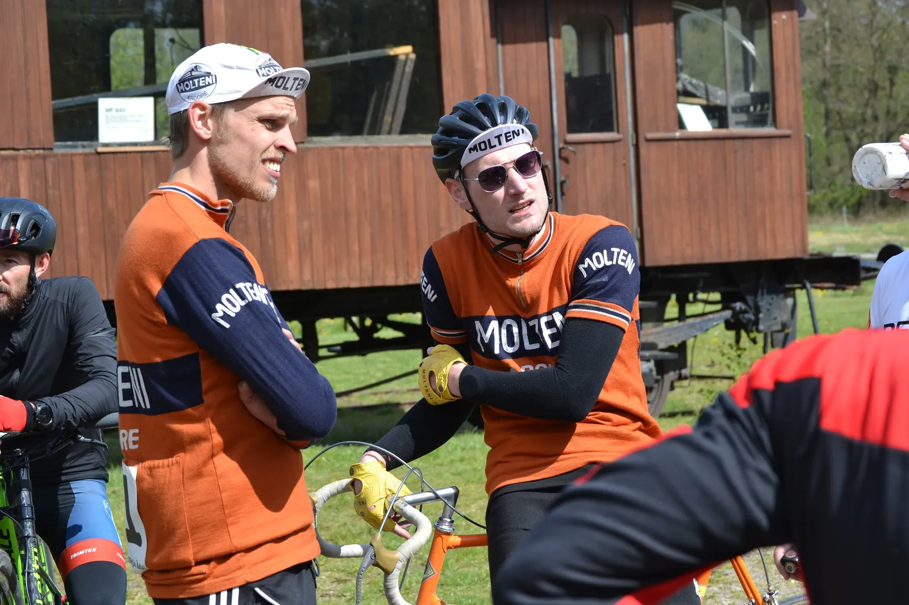
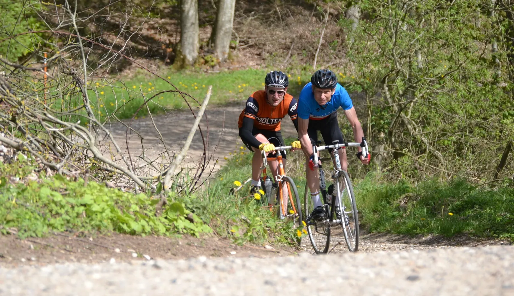
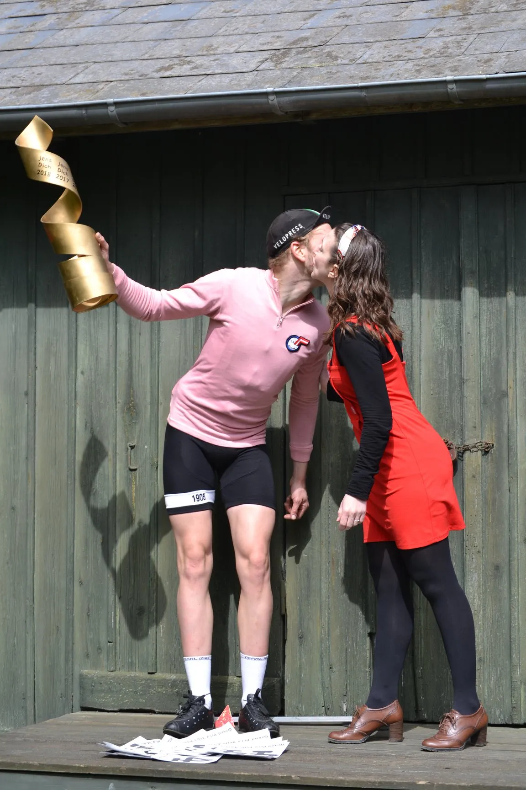
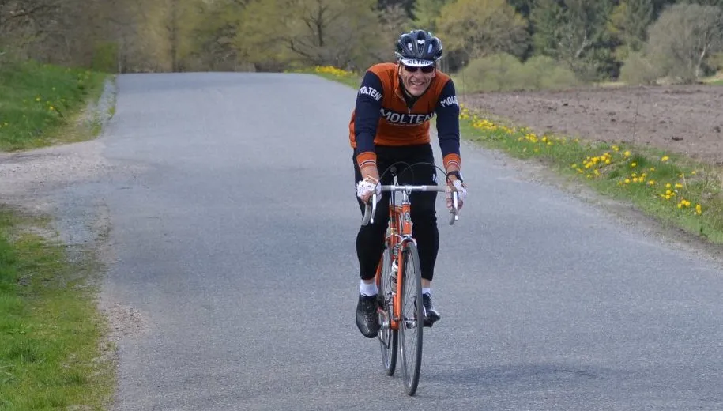
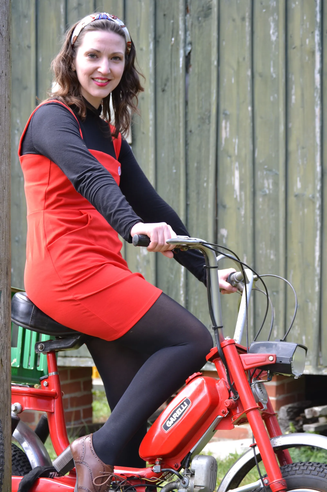

Grand Prix Vejle Ådal 2019: (U)forudsigeligt drama hele dagen

Ny rute, diverse afkørsler, ruteforvirring, punkteringer, en sikker sejr der forsvandt og alligevel var alt ved det gamle ved dette års Grand Prix Vejle Ådal.
Squadra Molteni lå længe til at tage tredjepladsen, men i sidste ende måtte holdet tage til takke med en sjetteplads. Til gengæld kom holdet på podiet i form af Maria Winther, der var kyssepige.
Per Sandahl og Mark Petersen blev forhindret, og kaptajn Niels Bjørnsteen var taget med familien til Falster, hvor han efter sigende arbejder på en ny rekord i hæmatokrit.
Eigil Leegaard, Carsten Jakobsen, Kasper Sørensen, Lars Munch og Jeppe Thiemer stillede til start i det traditionsrige løb.
Demo eller cykelløb?
Arrangør, Carsten Bagmand fra Team K-Werk, holdt løbsmøde iført grå sixpence og indhegnet af rød/hvid politi afspærringsbånd. Nogen blev for en kort stund lidt i tvivl om, hvad de havde meldt sig til.
Specielt da han annoncerede, at Franskmændene fra Peugeot skulle smutte hjem til hvor de kom fra. Men så kom seriøsiteten tilbagen: ”Kør efter de cycklamefarvede pile på første omgang, og dem der kører 80 km., kør efter de blå på anden omgang”, lød det. Det skulle vise sig at blive afgørende.

Ruten var i år omvendt i forhold til de forrige udgaver, og inkluderede endnu flere pavéstykker.
Start på overgroet kreatursti
Første pavé-stykke, som mest af alt var en overgroet kreatursti, ramte feltet allerede efter 3 km.
– Det var jo fuldstændigt ufremkommeligt terræn, jeg var af og løbe med cyklen som en anden cross-rytter, sagde Carsten Jakobsen efter løbet, inden det gik op for ham, at han var kommet ind på et forkert stykke.
Græsstykket fik fatale følger for Jeppe Thiemer, der blev sat af, og desværre aldrig kom tilbage. Lars, Eigil og Kasper kom med frontgruppen, hvor de tre rytter fra Oldcranks var i stærkt overtal. Jørn Nielsen fra Team K-Werk, Jens Dichie og Peugeot-holdet var også repræsenteret.
Oldcranks vs. Jens Dichie
Der blev stukket lidt på skift, og efter en afstikker ind i en privat indkørsel af to Oldcranks ryttere, kom Jens Diche og Thomas Bisgaard (Oldcranks) afsted.
Efter anden pavé-Potkjær, var der total spredning. De to resterende Oldcranks ryttere, Rasmus Hammer og Johannes Dahl havde sat jagten ind på de to foreste. Jørn Nielsen og Kasper Sørensen fik kontakt på Bindeballestien, men kun for en kort stund.
– Det var ligesom de to Aalborgdrenge kiggede på hinanden, og kiggede så på os. De mente åbenbart ikke, vi hørte til i det selskab, så de trådte os simpelthen ud af hjulet. Og selvom jeg var på hælene, så var Jørn Nielsen altså godt kørende, siger en forstummet Kasper Sørensen.

Stor spredning efter Vingsted Skovvej
I front blev der samling på Vingsted Skovvej, men Bisgaard fik defekt, hvilket efterladte Jens i undertal sammen med Rasmus og Johannes fra Oldcranks. De sagde farvel til Jens efter 45 km.
– Jeg sætter et enkelt ryk ind i sidevinden, og Jens kan ikke holde hjulet. På bakken efter rykker Johannes og sætter Jens, og han kører op til mig, og vi kører to mand væk, siger Rasmus Hammer.
Eigil fandt ind i en gruppe efter Jørn og Kasper, hvor Jørn flere gange var tæt på at køre Kasper ud af hjulet. Det skete så efter 40 km. hvorefter Kasper sad alene.
En sikker sejr blev smidt væk
De to Oldcranks rytter havde 3,5 minutter ned til Jens, da de kørte ud på anden omgang, der var en sløjfe på ca. 25 km. En sikker sejr, blev der sagt i målområdet. Det blev ikke til den fjerde sejr på stribe til Jens mente man.
Men selvom Oldcranks denne gang ikke kørte ind i en privatindkørsel, så glemte de at følge de blå pile på anden omgang. De kørte forkert og blev diskvalificeret. En tydelig skuffelse for de to ryttere, der giver løbet en noget hård medfart på de sociale medier. Men i et ægte retrocykelløb, er det vel rytterens eget ansvar at få kigget på rutekortet før start?
– Udueligt arrangement af et retroløb -men fint vejr, skriver Johannes på sin Strava profil (red. Strava er en moderne og offentlig udgave af træningsdagbogen).
Jeppe Thiemer havde punkteret to lunger, og stod af efter første omgang. Det blev dog ikke til lang tid af cyklen, da han i al hast, blev sendt ud på ruten for at fortælle Jens, at han nu førte løbet.
Jens kørte i mål som sikker vinder, og fik også, pga. Jeppe, lavet en sejrsfejring på målstregen.

Squadra Molteni lige pludselig på mod podiet
Samtidig betød det, at Jørn Nielsen nu kørte efter anden pladsen, og Kasper var på tredjepladsen.
– Jeg var rimelig kold efter at have været en tur i Jørns maskine. Jeg kiggede mig hele tiden tilbage, men kunne ikke se nogen. Men efter jeg havde kørt 25 km. fangede de mig på toppen af Refsgårde, og der vidste jeg godt, at jeg ikke kunne slå dem. Thomas Bisgaard (Oldcranks), der var punkteret, havde åbenbart trukket gruppen med sig op, siger Kasper Sørensen.
Bisgaard kørte væk på Col de Potkjær – han kørte nu uvidende for tredjepladsen, og gruppen talte nu Pelle (Peugeot), Peter (Asmussen) og Kasper fra Squadra Molteni.
Jørn Nielsen kørte i mål efter Jens til en flot andenplads til Team K-Werk. Jørn kørte stort set 60 km. alene – først 20 km. med Kasper på hjul, og de sidste 40 km. hjem til mål.
Thomas tog sig af tredjepladsen, Pelle og Peter blev hhv. 4 og 5, og Kasper trillede ind på en 6. plads.
Alt var som det plejer
Eigil Leegard var i målområdet, og havde egentlig lagt rigtig fint i forfølgergruppen, men som så mange gange før, så kørte han forkert (han fulgte de blå pile på første omgang), og skuffet over sig selv, stillede han cyklen efter en omgang. DNF.

Maria uddelte smækkys til Jens, Jørn og Thomas hvorefter der blev inviteret til håndmadder og pilsnere i den gamle Bindeballe Købmandsgård.

Jens Dichie fik alligevel sin fjerde sejr på stribe, flere punkterede, flere kørte forkert, Bagmanden holdte en stram kurs, håndmadderne var velfortjente og velforberedte, øllene smagte fantastisk – kort sagt, alt var som det plejer ved Grand Prix Vejle Ådal.
Et fantastisk løb, der fortjener udsolgt igen næste år. Stor tak til arrangørerne, der arbejder forfærdeligt hårdt, for at vi andre kan nyde sådan et fantastisk arrangement.